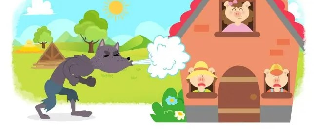

En un pueblito no muy lejano, vivía una mamá cerdita junto con sus tres cerditos. Todos eran muy felices hasta que un día la mamá cerdita les dijo:
—Hijitos, ustedes ya han crecido, es tiempo de que sean cerditos adultos y vivan por sí mismos.
Antes de dejarlos ir, les dijo:
—En el mundo nada llega fácil, por lo tanto, deben aprender a trabajar para lograr sus sueños.
Mamá cerdita se despidió con un besito en la mejilla y los tres cerditos se fueron a vivir en el mundo.
El cerdito menor, que era muy, pero muy perezoso, no prestó atención a las palabras de mamá cerdita y decidió construir una casita de paja para terminar temprano y acostarse a descansar.
El cerdito del medio, que era medio perezoso, medio prestó atención a las palabras de mamá cerdita y construyó una casita de palos. La casita le quedó chueca porque como era medio perezoso no quiso leer las instrucciones para construirla.
La cerdita mayor, que era la más aplicada de todos, prestó mucha atención a las palabras de mamá cerdita y quiso construir una casita de ladrillos. La construcción de su casita le tomaría mucho más tiempo. Pero esto no le importó; su nuevo hogar la albergaría del frío y también del temible lobo feroz...
Y hablando del temible lobo feroz, este se encontraba merodeando por el bosque cuando vio al cerdito menor durmiendo tranquilamente a través de su ventana. Al lobo le entró un enorme apetito y pensó que el cerdito sería un muy delicioso bocadillo, así que tocó a la puerta y dijo:
—Cerdito, cerdito, déjame entrar.
El cerdito menor se despertó asustado y respondió:
—¡No, no y no!, nunca te dejaré entrar.
El lobo feroz se enfureció y dijo:
—Soplaré y resoplaré y tu casa derribaré.
El lobo sopló y resopló con todas sus fuerzas y la casita de paja se vino al piso. Afortunadamente, el cerdito menor había escapado hacia la casa del cerdito del medio mientras el lobo seguía soplando.
El lobo feroz sintiéndose engañado, se dirigió a la casa del cerdito del medio y al tocar la puerta dijo:
—Cerdito, cerdito, déjame entrar.
El cerdito del medio respondió:
—¡No, no y no!, nunca te dejaré entrar.
El lobo hambriento se enfureció y dijo:
—Soplaré y resoplaré y tu casa derribaré.
El lobo sopló y resopló con todas sus fuerzas y la casita de palo se vino abajo. Por suerte, los dos cerditos habían corrido hacia la casa de la cerdita mayor mientras que el lobo feroz seguía soplando y resoplando. Los dos hermanos, casi sin respiración le contaron toda la historia.
—Hermanitos, hace mucho frío y ustedes la han pasado muy mal, así que disfrutemos la noche al calor de la fogata —dijo la cerdita mayor y encendió la chimenea.
Justo en ese momento, los tres cerditos escucharon que tocaban la puerta.
—Cerdita, cerdita, déjame entrar —dijo el lobo feroz.
La cerdita respondió:
—¡No, no y no!, nunca te dejaré entrar.
El lobo hambriento se enfureció y dijo:
—Soplaré y soplaré y tu casa derribaré.
El lobo sopló y resopló con todas sus fuerzas, pero la casita de ladrillos resistía sus soplidos y resoplidos. Más enfurecido y hambriento que nunca decidió trepar el techo para meterse por la chimenea. Al bajar la chimenea, el lobo se quemó la cola con la fogata.
—¡AY! —gritó el lobo.
Y salió corriendo por el bosque para nunca más ser visto.
Un día cualquiera, mamá cerdita fue a visitar a sus queridos cerditos y descubrió que todos tres habían construido casitas de ladrillos. Los tres cerditos habían aprendido la lección:
“En el mundo nada llega fácil, por lo tanto, debemos trabajar para lograr nuestros sueños”.
